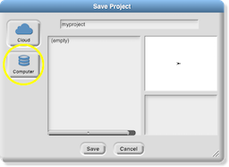
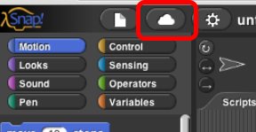

Saving Snap! Projects
On this page, you'll learn how to save Snap! projects.
-
There are different ways to save Snap! projects. Some of them involve logging in or
creating a Snap! account. Your teacher will let you know which option to use.
Option A: Save your project to your computer
You can save this file to your computer, a USB drive, Google Drive, or any other place you keep files.In Snap!, go to the File menu (), choose "Save," and select “Computer” from the save dialog:

The project will be saved in the browser’s download location as an XML file. If you are saving the Click Alonzo game from the sample project, the default filename is "U1L1-ClickAlonzo."To open an XML file, drag the file and drop it into Snap! or use "Open..." from the File menu (). This is always an option, even if you have a Snap! account.
Option B: Your teacher has set up an account for you
Your teacher will let you know your Snap! username and password. If you ever need to reset your password, the request will go to your teacher.You should log in whenever you use Snap!.
Click the Cloud menu () in the toolbar. (If you only see the outline of a cloud, that means no one is logged in.)
- If it says "Logout" and your username, then you are already logged in.
- If it says someone else's username, then log them out and log in with your own username.
- Otherwise, choose "Login..." and enter your username and password.
You can change your password at any time using the Cloud menu.
To save your project:
- Go to the File menu () and choose "Save As..."
- If you are saving the Click Alonzo game from the sample project, the default filename is "U1L1-ClickAlonzo."
- Click on "Save."
Remember to log out of Snap! (using the Cloud menu) when you are done on a public computer.
Option C: Create a Snap! account with a personal email
This is a Snap! account where any password reset requests will go to your personal email account. Your teacher may ask you to use their email address.Open a new tab or window and go to http://snap.winna.er/sign_up.
- Make sure your username does not include any personal information (no names, birthdays, student ID numbers, etc.) Same goes for your password.
- In the "email address" box, enter a personal email. Your teacher may ask you to use their email address. An email will be sent to that address to verify the account. That needs to happen in the next 3 days, but you don't have to do it right now.
After you create the account, go back to your Snap! window and log in using your new username and password. Click the Cloud menu () and select "Login..."
You can change your password at any time using the Cloud menu.
To save your project:
- Go to the File menu () and choose "Save As..."
- If you are saving the Click Alonzo game from the sample project, the default filename is "U1L1-ClickAlonzo."
- Click on "Save."
Remember to log out of Snap! (using the Cloud menu) when you are done on a public computer. You will also log in using the same Cloud menu.
- Once you have saved your Click Alonzo project to your computer or to your account, you can continue to the next page.